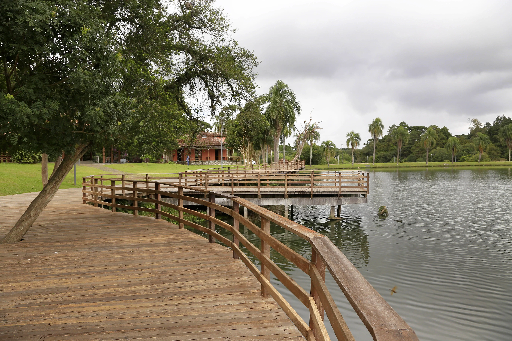

Venha Conhecer Diversos Pontos Turisticos Como:

Parque Municipal Tanguá
O Tanguá, nome indígena que significa “baía das conchas”, é um dos parques preferidos de quem visita Curitiba.

Passeio Público de Curitiba
O Passeio Público tem implantação e equipamentos em torno do verde de diversas espécies nativas e exóticas.

Jardim Botânico Municipal de Curitiba
A estufa de 458 m2, abriga exemplares vegetais naturais e ornamentais da flora da Mata Atlântica.
Parque ecológico Costa
Infelizmente o parque está temporariamente fechado.

Parque Municipal Lago Azul
Antiga propriedade de Luiza-Ângelo Segalla, nela funcionou um moinho de milho.

Parque Pinhal de Santana de Curitiba
Reza a lenda que o cacique Tindiquera indicou os colonizadores portugueses onde instalar a Vila